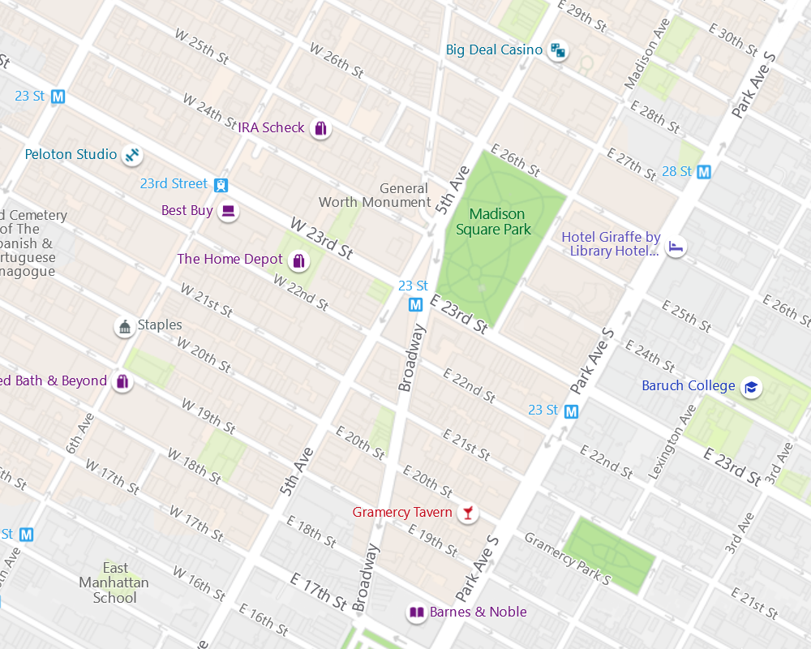
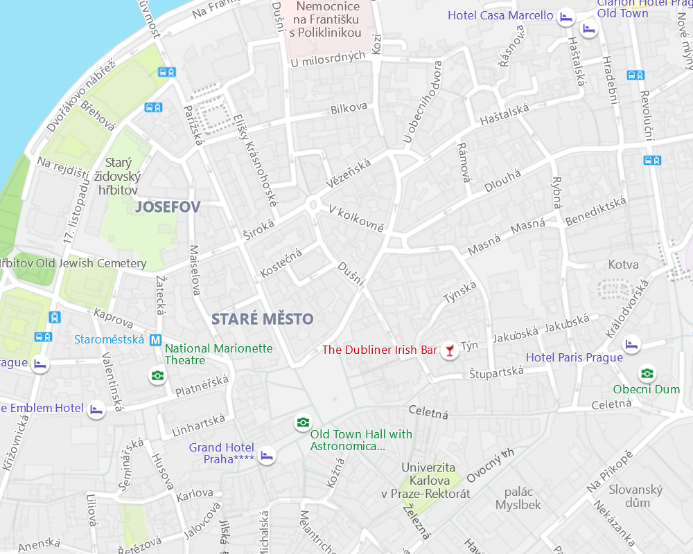
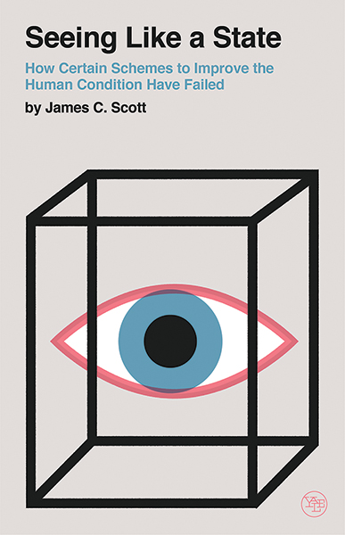

Programming
as architecture, urban planning and design?
Tomas Petricek, University of Kent
tomas@tomasp.net | @tomaspetricek
Disclaimer
This talk should not be taken too seriously!
What is this about?
Programs, languages or programming?
Anything goes?
Inconsistencies maybe, pluralism certainly

What my boss thinks I do? Programming language theory, data science applications |

What I think I actually do? Programming systems, cultures of programming, philosophy |

What you will think I do? Architecture, urban planning and design |
You should read and cite my papers but this talk won't help :-)
Focus of the talk

Complex problems & systems
- Solving complex problems
- Using interactive systems
- Tackling essential complexity?
Essential complexity (Brooks) E-programs (Lehman, 1980)
Alternative paradigms
- Programming as mathematics?
- Programming as engineering discipline?
- Programming as something else?
What about our way of working is historical accident?
Alternative paradigms, Chang's complementary science
Design and urban planning
Does this even make sense?
Designerly Ways of Knowing

Science
Study natural world using
experiment aiming for truth
Art
Study human experience using
metaphor aiming for justice
Design
Study the artificial using
synthesis aiming for appropriateness
Urban planning
|
Jacobs on cities Problems of simplicity Unorganized complexity Organized complexity |
Parnas on software Analogy systems Continuous models Repetitive digital Non-repetitive digital Non-reducible |
Understanding
Conceptual coherence
Conceptual coherence
Any product that is sufficiently big (...) must be conceptually coherent to the single mind of the user and at the same time desinged by many minds.
Brooks (1995)
Two kinds of cities
 The fact that the layout of the city (...)
lacks a consistent geometric logic does
not mean that it was at all confusing
to its inhabitants. Scott (1998)
Understanding cities
Legibility of a cityscape
- Old city privileges local knowledge
- Illegibility provides political safety
- Grid makes public services easy
Legibility of a software
- Hackers use local knowledge, engineers outside knowledge?
- How open-source communities work?
- Grid in spreadsheets for addressing?
Understanding cities
I know areas around a couple of the stops and some links
There is a way of learning new parts
if I need that
Image of a city

City as perceived by inhabitants
- Districts, landmarks, pathways
- Easily identifiable and groupable
- Subway & bike give different images
Can we build software like this?
- Messy but navigable?
- Shareable local knowledge?
- Inhabitable programming systems?
Reference to Richard Gabriel & Christopher Alexander?

Did we lose something along the way?
Interlisp and Smalltalk appear more inhabitable and navigable
Complementary science
Recover and update interesting past ideas!
Theories
Is there a place for elegant theories?
Programming as maths

Good research strategy
- Defines Kuhnian normal science
- Algorithm as a central concept
- Established it academically
Historical accident?
- Just one programming culture
- Focuses on mathematical questions
- Misses more important ones?
Utopian urban planning
Modernism, radiant city and garden city plans
Housing blocks in green or rural spaces
Clear organization of functions of the city
Jane Jacobs
Life and Death of Great
American Cities (1961)
- East Village & Boston North End
- Demolition and redevelopment?
- Lively city streets that work
How theory does not work
- Informal social control
- Enabled by mixed function
- Density and diversity
Utopian Software
Rigorous software methods
- Non-reducibility of problems
- Are simple principles too simple?
- Abstraction & information hiding?
How to study such questions?
- Describe concrete cases
that work despite theory - Focus on unaverage indicators
Conclusions
Design, architecture, urban planning
What did not fit
Vernacular architecture
- Architecture without architects
- Developed by gradual adaptation
- Longer time-frame in software?
Designing for maintenance
- Teaching maintenance habits
- Materials that look bad before going bad
Programming
As architecture, urban planning and design?
At least as good metaphor as
engineering and mathematics!
Incommensurable paradigm
asking different questions?
Tomas Petricek, University of Kent
tomas@tomasp.net | @tomaspetricek